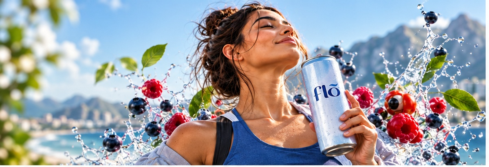
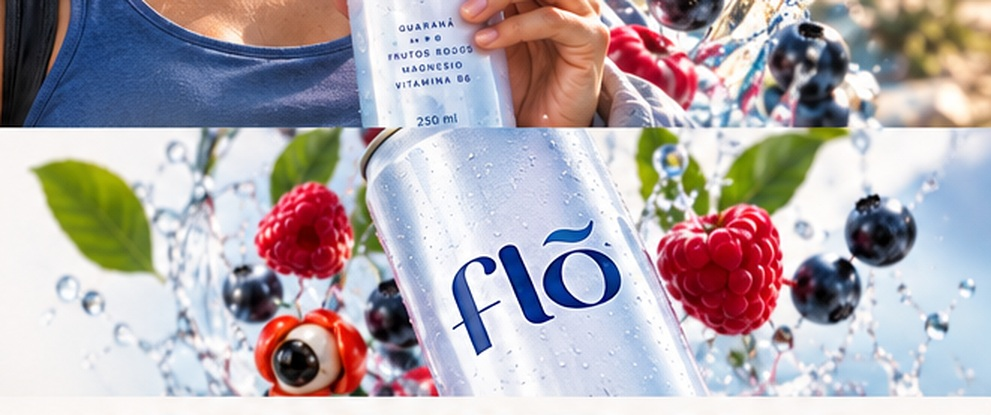
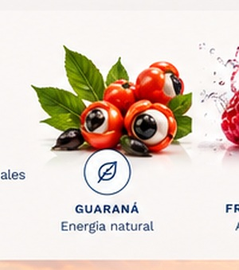
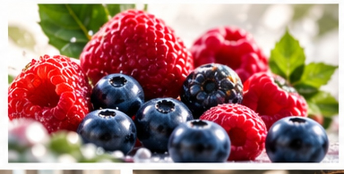
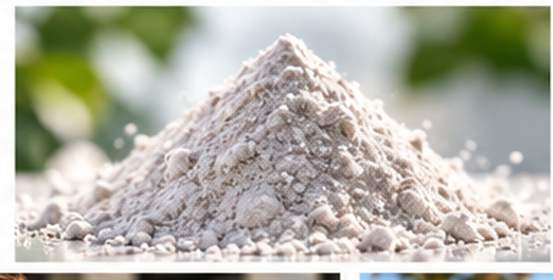
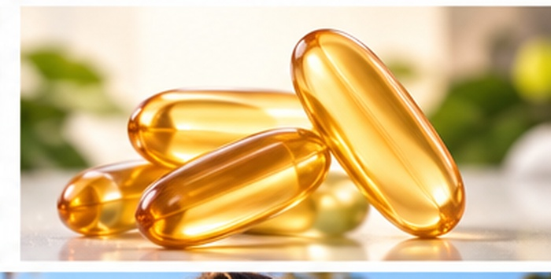
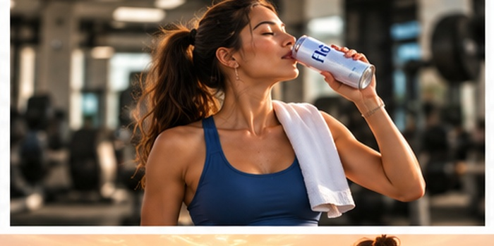
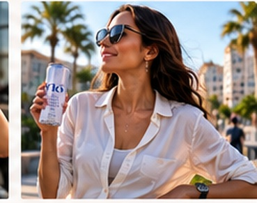

Hidratación
Acompaña a tu cuerpo durante el día.
Bienestar · Movimiento · Tu ciclo
Una bebida funcional creada para acompañarte durante tu ciclo, con ingredientes pensados para tu bienestar, hidratación y energía.
Quiero ser parte de FLŌ →Sé de las primeras en conocer FLŌ.
Conoce FLŌ
FLŌ nace para acompañarte durante tu ciclo con una fórmula funcional que combina ingredientes seleccionados para complementar tu bienestar diario.
Acompaña a tu cuerpo durante el día.
Ingredientes seleccionados pensando en tu ciclo.
Para acompañar tu ritmo de forma natural.

Ingredientes que te acompañan
Una combinación de ingredientes funcionales seleccionados para complementar tu bienestar.

Energía natural

Antioxidantes

Bienestar muscular

Para complementar tu bienestar diario
FLŌ se adapta a tu ritmo.
Para seguir enfocada en lo que te importa.

Para acompañar tu energía.

Para cada momento de tu ciclo.
Sé parte de la comunidad
Queremos construir una nueva forma de acompañar el ciclo femenino. Únete a nuestra comunidad y sé de las primeras en conocer el producto, compartir tu experiencia y participar en su lanzamiento.